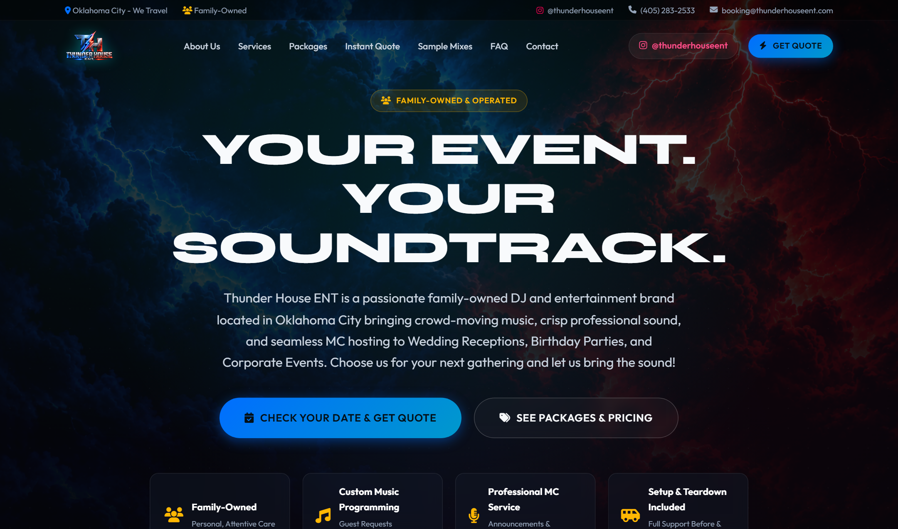

System Architecture & Staff Fundamentals
Welcome to Thunder House ENT. This manual is designed to equip every team member—from new apprentice DJs to seasoned operational leads—with an exhaustive, crystal-clear understanding of our technology infrastructure, business philosophy, and event execution protocols.
1. The Thunder House Operating Philosophy
Thunder House Entertainment is a premier, family-owned DJ and live event production company based in Oklahoma City, Oklahoma. Unlike national DJ booking agencies that subcontract anonymous performers with generic equipment, our entire brand identity is built around two unwavering pillars:
- Reading the Crowd with Curated Music: We do not rely on static Spotify playlists. Our DJs actively monitor dance floor energy, beatmatch seamlessly across multiple genres (Hip-Hop, R&B, Pop, Latin, Country, and Classics), and adapt live to the audience in front of them.
- Professional MC Coordination: Great events require steady, polished leadership. We coordinate timelines behind the scenes with caterers, photographers, and venue coordinators so clients experience zero stress from grand introductions to the final send-off.
Every digital tool in this ecosystem—from our automated 72-hour date hold releaser to the equipment QR scanner—exists to protect our calendar integrity, eliminate human error during performances, and guarantee our clients receive world-class hospitality.
2. Staff Roles & Security Permissions
The system is strictly divided into two distinct operational roles. Understanding your role determines which screens you can access, which financial transactions you can authorize, and how quotes are dispatched to clients:
Has full read and write authority across every sector of the platform. Superusers manage bank payout connections, inspect gross revenue analytics, adjust base package pricing, approve staff consultation quotes, configure SMTP email relay credentials, and define automated system cron schedules.
olifedigital@gmail.comFocused on event execution, client music consultations, and hardware logistics. Staff DJs have access to the live event Run of Show, guest song requests triage, equipment fleet check-in/check-out scanning, the Thunder Crate fresh drops library, and consultation intake forms. Sensitive company finances and system credentials remain protected.
3. Complete End-to-End System Life Cycle
To avoid feeling overwhelmed by individual dashboards, review the diagram and 6-stage lifecycle below. Every client booking and gig execution follows this exact sequential path:

thunderhouseent.com. This is where potential clients first discover our brand, calculate transparent estimates, and initiate date reservations.
- Client Intake & 72-Hour Hold: The client visits the website, calculates an estimate, and completes the intake form. The system immediately places a temporary 72-hour lock on that date in our calendar so no other inquiry can claim it.
- Quote Review & Retainer Payment: The client receives an official quote summary with a secure Square payment link for a $200 date-lock retainer. Once paid, the date transitions permanently from "Hold" to "Booked".
- Contract E-Signature: A digital service agreement is generated and legally e-signed in browser by both the client and Thunder House ENT.
- Pre-Event Planning Portal: The client accesses their dedicated planning portal to build their timeline, specify VIP moments (first dances, speeches), and curate must-play songs.
- Studio Pack-Out & Mobile QR Scan: 24 hours before performance, staff stage speakers, mixers, and lighting, scanning each item via mobile phone camera into "Packed / In Transit".
- Gig Execution & Automated Archive: The DJ executes the live run-of-show. Crowd requests are triaged in real time. Following the event, balances are reconciled, review outreach is automated, and temporary streaming audio is cleanly pruned.
Notice the gold Lightning Bolt button in the top right header. When you click it, the manual transforms into the Cyber Portal Mode—an animated, high-contrast HUD designed for stage technicians and night-time DJ booth environments. Your choice is saved automatically.